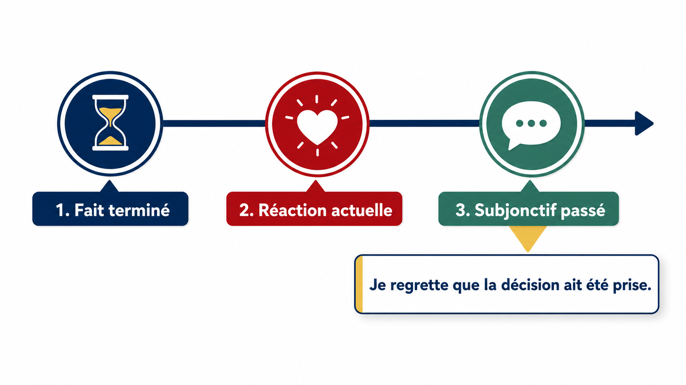

Route du thème Essentiel
Comprendre le chemin : fait terminé, réaction actuelle, choix du mode, puis précision des accords.
VisuelFait terminé → réaction actuelle → subjonctif passé

1. Le fait est terminé
Une décision, une réponse ou une action a déjà eu lieu.
La mairie a annulé le projet.
2. Je réagis maintenant
Je montre une émotion, un jugement, un doute ou une réserve.
Il est regrettable que...
3. J'utilise le subjonctif passé
La proposition avec que présente l'action déjà accomplie.
Il est regrettable que la mairie ait annulé le projet.
Idée centrale
Le subjonctif passé relie deux temps de sens : la réaction est actuelle, mais l'action commentée est antérieure. C'est pour cela qu'il est très utile dans les commentaires critiques, les bilans et les débats.